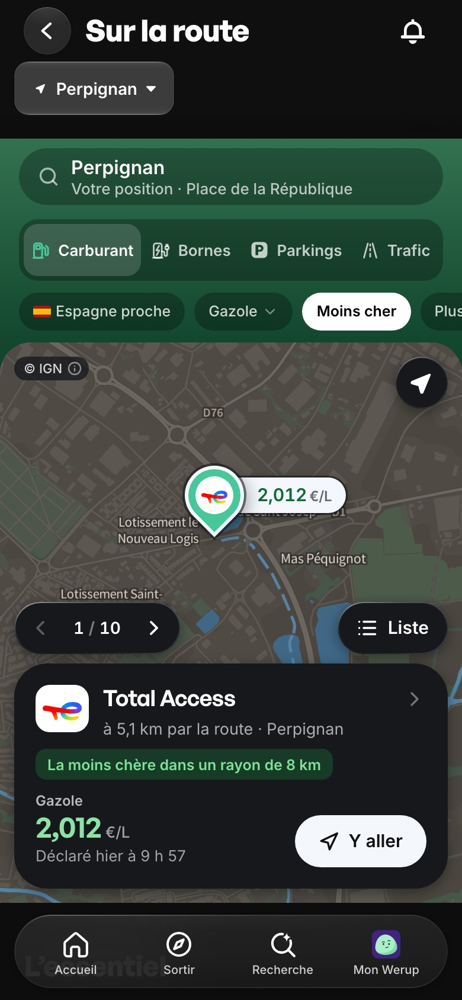
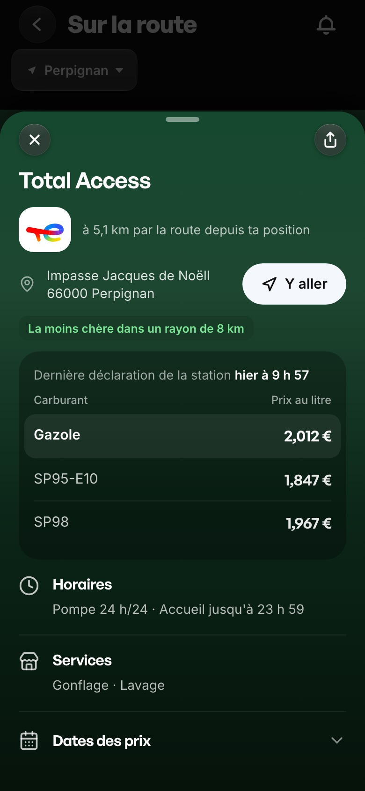
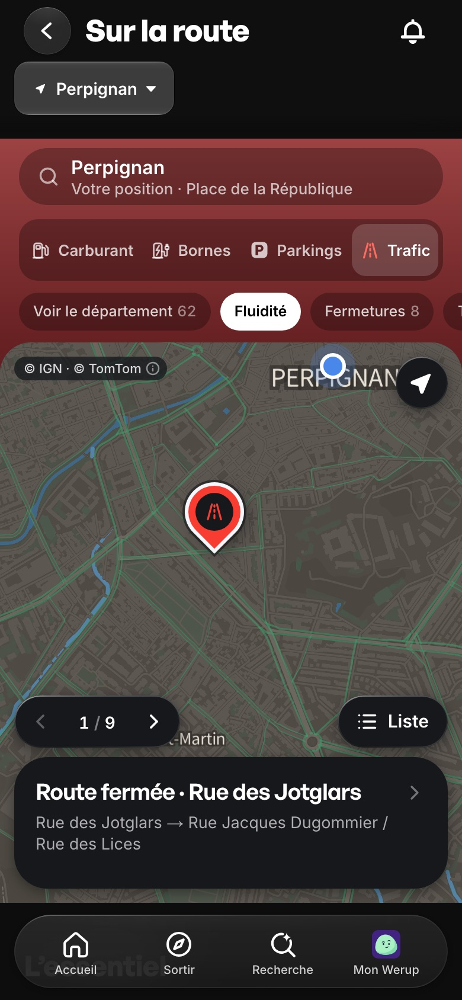
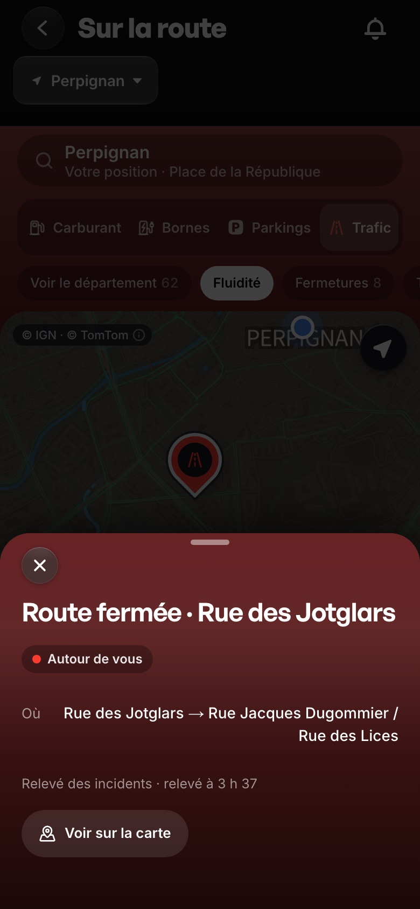

Carburant vert, trafic rouge
Captures de werup.app en production, le 18/11 vers 3 h 50.
Carburant, en premierLe vert du trafic d'hier, la pompe émeraude du widget. La page s'ouvre sur le carburant.
La fiche d'une stationLe même vert, plus profond.
Trafic, en dernierUn rouge adouci, même quand tout est fluide.
La fiche d'un événementLe même rouge, plus profond.